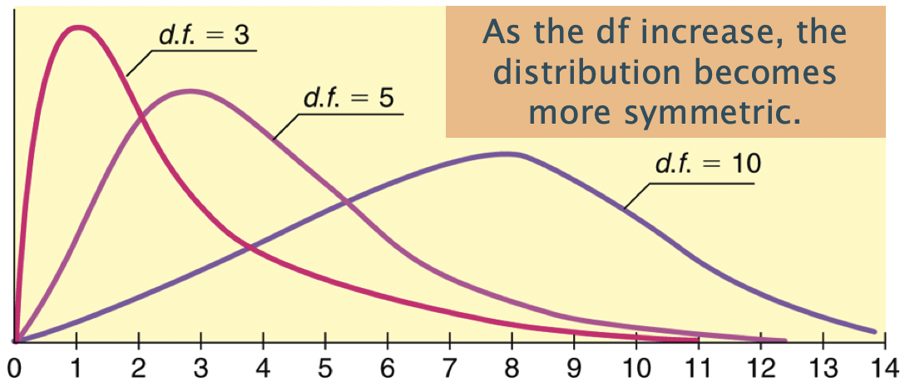

Lesson 16: Chi-squared test
TB sections 8.3-8.4
2024-12-02
Learning Objectives
Understand the Chi-squared test and the expected cell counts under the null hypothesis distribution.
Determine if two categorical variables are associated with one another using the Chi-squared test.
Where are we?

Last time
- We looked at inference for a single proportion
- We looked at inference for a difference in two independent proportions
- If there are two groups, we could see if they had different proportions by testing if the difference between the proportions were the same (null) or different (alternative, two-sided, \(\neq\))
What happens when we want to compare two or more groups’ proportions?
- Can no longer rely on the difference in proportions
- Need a new method to make inference (Chi-squared test!)
Learning Objectives
- Understand the Chi-squared test and the expected cell counts under the null hypothesis distribution.
- Determine if two categorical variables are associated with one another using the Chi-squared test.
From Lesson 4: Example: hypertension prevalence (1/2)
- US CDC estimated that between 2011 and 20141, 29% of the population in America had hypertension
- A health care practitioner seeing a new patient would expect a 29% chance that the patient might have hypertension
- However, this is only the case if nothing else is known about the patient
From Lesson 4: Example: hypertension prevalence (2/2)
- Prevalence of hypertension varies significantly with age
- Among adults aged 18-39, 7.3% have hypertension
- Adults aged 40-59, 32.2%
- Adults aged 60 or older, 64.9% have hypertension
Knowing the age of a patient provides important information about the likelihood of hypertension
- Age and hypertension status are not independent - Can we back up this claim??
While the probability of hypertension of a randomly chosen adult is 0.29…
- The conditional probability of hypertension in a person known to be 60 or older is 0.649
Question: Is there an association between age group and hypertension?
From Lesson 4: Contingency tables
- We can start looking at the contingency table for hypertension for different age groups
- Contingency table: type of data table that displays the frequency distribution of two or more categorical variables
| Age Group | Hypertension | No Hypertension | Total |
|---|---|---|---|
| 18-39 yrs | 8836 | 112206 | 121042 |
| 40-59 yrs | 42109 | 88663 | 130772 |
| 60+ yrs | 39917 | 21589 | 61506 |
| Total | 90862 | 222458 | 313320 |
Test of General Association + Hypotheses
- General research question: Are two variables (both categorical, nominal) associated with each other?
General wording for hypotheses
Test of “association” wording
\(H_0\): There is no association between the two variables
\(H_A\): There is an association between the two variables
Test of “independence” wording
\(H_0\): The variables are independent
\(H_A\): The variables are not independent
Hypotheses test for example
Test of “association” wording
\(H_0\): There is no association between age and hypertension
\(H_A\): There is an association between age and hypertension
Test of “independence” wording
\(H_0\): The variables age and hypertension are independent
\(H_A\): The variables age and hypertension are not independent
\(H_0\): Variables are Independent (under the null)
- Recall from Chapter 2, that events \(A\) and \(B\) are independent if and only if
\[P(A \cap B)=P(A)P(B)\]
- If age and hypertension are independent variables, then theoretically this condition needs to hold for every combination of levels, i.e.
\[\begin{align} P(18-39 \cap \text{hyp}) &= P(18-39)P(\text{hyp})\\ P(18-39 \cap \text{no hyp}) &= P(18-39)P(\text{no hyp})\\ P(40-59 \cap \text{hyp}) &= P(40-59)P(\text{hyp})\\ P(40-59 \cap \text{no hyp}) &= P(40-59)P(\text{no hyp})\\ P(60+ \cap \text{hyp}) &= P(60+)P(\text{hyp})\\ P(60+ \cap \text{no hyp}) &= P(60+)P(\text{no hyp})\\ \end{align}\]
| Age Group | Hypertension | No Hypertension | Total |
|---|---|---|---|
| 18-39 yrs | 8836 | 112206 | 121042 |
| 40-59 yrs | 42109 | 88663 | 130772 |
| 60+ yrs | 39917 | 21589 | 61506 |
| Total | 90862 | 222458 | 313320 |
\[\begin{align} P(18-39 \cap \text{hyp}) &= \frac{121042}{313320}\cdot\frac{90862}{313320}\\ & ...\\ P(60+ \cap \text{no hyp}) &=\frac{61506}{313320}\cdot\frac{222458}{313320} \end{align}\]
With these probabilities, for each cell of the table we calculate the expected counts for each cell under the \(H_0\) hypothesis that the variables are independent
Expected counts (if variables are independent)
- The expected counts (if \(H_0\) is true & the variables are independent) for each cell are
- \(np = \text{total table size} \cdot \text{probability of cell}\)
- \(\text{expected count} = \dfrac{\text{column total}\cdot \text{row total}}{\text{table total}}\)
Expected count of 40-59 years old and hypertension:
\[\begin{align} \text{expected count} &= \dfrac{\text{column total}\cdot \text{row total}}{\text{table total}} \\ &= \dfrac{\text{90862}\cdot \text{130772}}{\text{313320}} \\ &= 37923.55 \end{align}\]
| Age Group | Hypertension | No Hypertension | Total |
|---|---|---|---|
| 18-39 yrs | 8836 | 112206 | 121042 |
| 40-59 yrs | 42109 | 88663 | 130772 |
| 60+ yrs | 39917 | 21589 | 61506 |
| Total | 90862 | 222458 | 313320 |
- If age group and hypertension are independent variables
- (as assumed by \(H_0\)),
- then the observed counts should be close to the expected counts for each cell of the table
- Test to see how likely is it that we observe our data given the null hypothesis (no association)
Observed vs. Expected counts
- The observed counts are the counts in the 2-way table summarizing the data
| Age Group | Hypertension | No Hypertension |
|---|---|---|
| 18-39 yrs | 8836 | 112206 |
| 40-59 yrs | 42109 | 88663 |
| 60+ yrs | 39917 | 21589 |
- The expected counts are the counts the we would expect to see in the 2-way table if there was no association between age group and hypertension
| Age Group | Hypertension | No Hypertension |
|---|---|---|
| 18-39 yrs | 35101.87 | 85940.13 |
| 40-59 yrs | 37923.55 | 92848.45 |
| 60+ yrs | 17836.58 | 43669.42 |
Expected count for cell \(i,j\) :
\[\textrm{Expected Count}_{\textrm{row } i,\textrm{ col }j}=\frac{(\textrm{row}~i~ \textrm{total})\cdot(\textrm{column}~j~ \textrm{total})}{\textrm{table total}}\]
Poll Everywhere Question 2
Using R for expected cell counts
R calculates expected cell counts using the
expected()function in theepitoolspackageMake sure dataset is in
matrixform usingas.matrix()
Hypertension No_Hypertension
18-39 yrs 8836 112206
40-59 yrs 42109 88663
60+ yrs 39917 21589Learning Objectives
- Understand the Chi-squared test and the expected cell counts under the null hypothesis distribution.
- Determine if two categorical variables are associated with one another using the Chi-squared test.
Reference: Steps in a Hypothesis Test
Check the assumptions
Set the level of significance \(\alpha\)
Specify the null ( \(H_0\) ) and alternative ( \(H_A\) ) hypotheses
In symbols- In words
Alternative: one- or two-sided?
Calculate the test statistic.
Calculate the p-value based on the observed test statistic and its sampling distribution
Write a conclusion to the hypothesis test
- Do we reject or fail to reject \(H_0\)?
- Write a conclusion in the context of the problem
Step 1: Check assumptions
- Independence
- All individuals are independent from one another
- In particular, observational units cannot be represented in more than one cell
- For example, someone cannot be in two differnt age groups
- All individuals are independent from one another
- Sample size
- In order for the distribution of the test statistic to be appropriately modeled by a chi-squared distribution we need
- 2 \(\times\) 2 table
- expected counts are at least 10 for each cell
- Larger tables
- No more than 20% of expected counts are less than 5
- All expected counts are greater than 1
Step 2 and 3: Significance level and Hypotheses
- Set \(\alpha = 0.05\)
Hypotheses test for example
Test of “association” wording
\(H_0\): There is no association between age and hypertension
\(H_A\): There is an association between age and hypertension
Test of “independence” wording
\(H_0\): The variables age and hypertension are independent
\(H_A\): The variables age and hypertension are not independent
Step 4: Calculate the \(\chi^2\) test statistic (1/2)
Test statistic for a test of association (independence):
\[\chi^2 = \sum_{\textrm{all cells}} \frac{(\textrm{observed} - \text{expected})^2}{\text{expected}}\]
- When the variables are independent, the observed and expected counts should be close to each other
Step 4: Calculate the \(\chi^2\) test statistic (2/2)
\[\begin{align} \chi^2 =& \sum\frac{(O-E)^2}{E} \\ =& \frac{(8836-35101.87)^2}{35101.87} + \frac{(112206-85940.13)^2}{85940.13} + \\ & \ldots + \frac{(21589-43669.42)^2}{43669.42} \\ =& 66831 \end{align}\]
Is this value big? Big enough to reject \(H_0\)?
Observed:
| Age Group | Hypertension | No Hypertension |
|---|---|---|
| 18-39 yrs | 8836 | 112206 |
| 40-59 yrs | 42109 | 88663 |
| 60+ yrs | 39917 | 21589 |
Expected:
| Age Group | Hypertension | No Hypertension |
|---|---|---|
| 18-39 yrs | 35101.87 | 85940.13 |
| 40-59 yrs | 37923.55 | 92848.45 |
| 60+ yrs | 17836.58 | 43669.42 |
Poll Everywhere Question 2
Step 5: Calculate the p-value
The \(\chi^2\) distribution shape depends on its degrees of freedom
- It’s skewed right for smaller df,
- gets more symmetric for larger df
- df = (# rows-1) x (# columns-1)

Step 4-5: Calculate the test statistic and p-value
- Data need to be in a matrix or table: use
as.matrix()ortable()- Use matrix if data already in contingency table form
- Use table if data are two columns with each row for each observation (tidy version)
- Notice that age groups are rownames! Age does not have its own column
- Run
chisq.test()in R
Step 6: Conclusion
Recall the hypotheses to our \(\chi^2\) test:
\(H_0\): There is no association between age and hypertension
\(H_A\): There is an association between age and hypertension
- Recall the \(p\)-value = 0.0402
- Use \(\alpha\) = 0.05
- Do we reject or fail to reject \(H_0\)?
Conclusion statement:
- There is sufficient evidence that there is an association between age group and hypertension (p-value < 0.0001`)
Warning!!
If we fail to reject, we DO NOT say variables are independent! We can say that we have insufficient evidence that there is an association.
Chi-squared test: Example all together
- Check expected cell counts threshold
Hypertension No_Hypertension
18-39 yrs 35101.87 85940.13
40-59 yrs 37923.55 92848.45
60+ yrs 17836.58 43669.42All expected cells are greater than 5.
\(\alpha = 0.05\)
Hypothesis test:
- \(H_0\) : There is no association between age group and hypertension
- \(H_1\) : There is an association between age group and hypertension
4-5. Calculate the test statistic and p-value for Chi-squared test in R
Pearson's Chi-squared test
data: hyp_data2
X-squared = 66831, df = 2, p-value < 2.2e-16- Conclusion
We reject the null hypothesis that age group and hypertension are not associated (\(p<2.2\cdot10^{-16}\)). There is sufficient evidence that age group and hypertension are associated.
Lesson 16 Slides